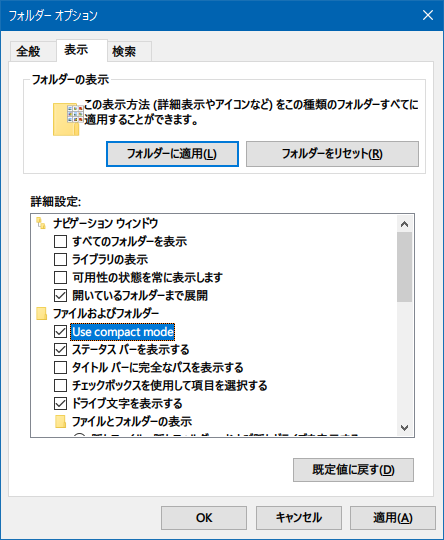

Windows Update したらエクスプローラの項目の行間が開いたのを直す
Windows10 を Windows Update したら、突然エクスプローラの表示が変わってしまった。ファイル項目と項目の行間が広く開いてしまった。
自分は普段「詳細」表示しかしていないので、「一覧」表示か何かに切り替わってしまったのか？と思ったけど、どうやらそうでもないみたい。
調べてみたら、「コンパクトモード」なる新機能がリリースされていたようだ。
というか、今までの行間が詰まった表示が「コンパクトモード」となって、通常モードが行間の開いた状態になったようだ。どうもタブレットモードでの扱いを良くするためとからしい。
でも、自分としては今までどおりの表示が良いので、戻すことにする。
エクスプローラのメニューから「フォルダーオプション」を開いて、「表示」タブ → 「ファイルおよびフォルダー」内にある、「Use compact mode」にチェックを入れてやれば、今までどおりの表示に戻せる。

こういう変更点に対する案内って、なんかカジュアルに表示してくれないもんかねぇ…。要らないポップアップは出るのに、こういう UI の大きな変更には何の通知もない…。